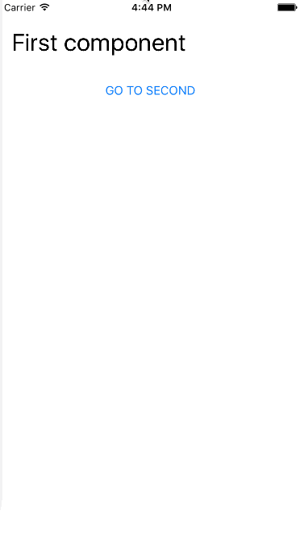
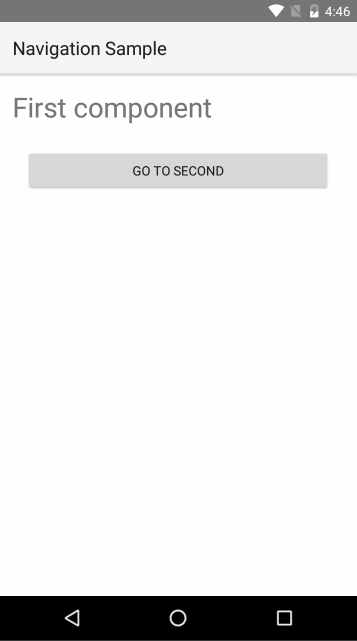

Navigation
Navigation
In this article we will cover how to do navigation in NativeScript application using Angular.
- Router
- Configuration
- Pages
- Router Links
- Router Outlet
- Page Router Outlet
- Navigation Options
- Route Guards
Router
In an Angular 2 application navigation is done using the Angular Component Router. You can check this detailed guide on how to use the router. From here on we are going to assume that you are familiar with the basic concepts and concentrate on the specifics when doing navigation with Angular 2 inside a NativeScript app.
Note: This article covers usage of the @angular/router v3. For the
deprecated beta routerplease importnativescript-angular/router-deprecated.
Configuration
The router configuration usually consists of the following steps:
Create a RouterConfig object which maps paths to components and parameters:
SNIPPET
Use nsRouterProvider function to create provider for the router:
SNIPPET
Pass the provider to the nativeScriptBootstrap when starting your app:
SNIPPET
Pages
NativeScript apps consist of pages which represent the separate application screens. Pages are instances of the Page class. Page navigation integrates with the native navigation elements on the current platform (ex. the Back button in Android or the NavigationBar in iOS).
Note: You will rarely need to create Page instances manually. The framework creates pages automatically when bootstrapping or navigating the app. You can get a reference to the current page by injecting it into your component using the DI.
In NativeScript you have a choice between two router outlets:
router-outlet- replaces the content of the outlet with different component. It is the default outlet that comes from Angular 2.page-router-outlet- uses pages to navigate. The new components are shown in a new page.
To show the difference between the to we are going to use the following components in the next examples:
SNIPPETWe are also going to use the following route configuration file (app.routes.ts):
Router Links
One thing you might have noticed in the code above is the nsRouterLink directive. It is similar to routerLink, but works with NativeScript navigation. It is included in the NS_ROUTER_DIRECTIVES.
Router Outlet
Let’s take a look at the following example that uses <router-outlet>:
There are few things worth noting:
The main component uses both ROUTER_DIRECTIVES (needed for <router-outlet>) and NS_ROUTER_DIRECTIVES (needed for routerLink).
The result is that with each navigation the content of the router-outlet is replaced with the new component:

Page Router Outlet
Here is a similar example using the page-router-outlet:
The main difference here is that when navigating - the new component will be loaded as a root view in a new Page. This means that any content outside the page-router-outlet will not be included in the new page. This is the reason why the page-router-outlet is usually the single root element in the application component.
Here is the result:
 
Note that we can now use the Back button and the NavigationBar to navigate.
It is possible to nest <router-outlet> component inside <page-router-outlet> or another <router-outlet>.
Navigation Options
You can define the trigger in your application declaratively - using the nsRouterLink directive in your markup. Or you can do it through code - by injecting the RouterExtensions class and using its methods:
Note: You can also use the stock Angular
RouteandLocationclasses to handle your navigation—RouterExtensionsactually invokes those APIs internally. However,RouterExtenstionsprovides access to some NativeScript-specific features like clearing navigation history or defining page transitions.
Navigating Back
You can navigate back using back() method of the RouterExtensions:
You can also navigate back to the previous page with backToPreviousPage():
The difference between the two methods is visible when there are nested(child) router-outlet(s) inside the current page:
back()- goes back to the previous router location even if the navigation occurred inside the child router outlet on the current page.backToPreviousPage()- goes back to the previous page. The method skips all child router-outlet navigations inside the current page and goes directly to the previous one.
Clearing Page Navigation History
In NativeScript’s page navigation, you have the option to navigate to another page and clear the page navigation history. This means that the user will not be able to go back using the back button (or swipe back in iOS). This is useful in scenarios where you have a login page and you don’t want users to be able go go back to it once logged in.
You can specify clearHistory as an attribute on your nsRouterLink tag in the markup:
Or you can use RotuerExtensions class:
Specifying Page Transitions
By default, all navigation will be animated and will use the default transition for the respective platform (UINavigationController transitions for iOS and Fragment transitions for Android). To change the transition type, set the pageTransition attribute on your nsRouterLink tag in the markup:
Note: You can set
pageTransition="none"to disable the transition.
You can also do this through code using the RotuerExtensions class:
Note: You can pass
animated: falseinNavigationOptionsto disable the transition.
For other customization options check the NavigationTransition interface.
Route Guards
You can use Angular’s route guards for even more control over the navigation.
Note: Currently, there is no way to prevent user-initiated back navigation - trying to apply guards in such scenario is not supported.